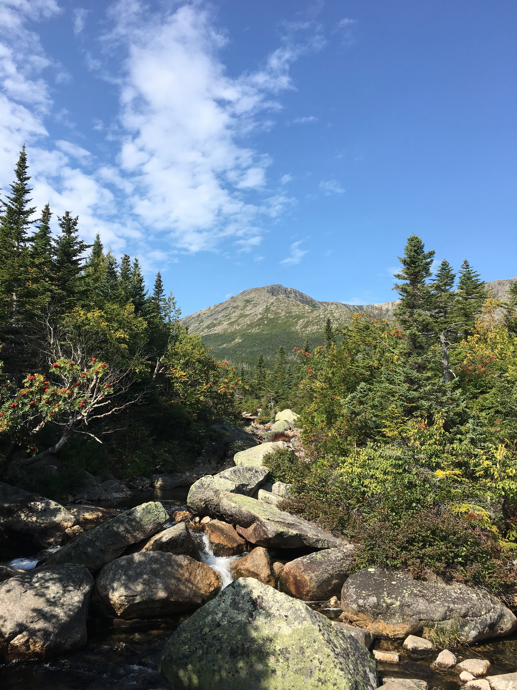

| Owen | Greene-Waszkowski | 03104 |
|---|
As I said in my first page, I'm a huge fan of rock climbing. That's why, when a friend of mine brought up hiking Katahdin to me, i knew i had to jump at the opportunity. Standing at 5,269' it was by far the hardest climb I had ever gone through. Especially at the end! Almost a sheer vertical climb towards the finish, with there being no grass, just rocks, rocks, and more rocks! I was EXHAUSTED at the end! However, what I saw along my path up was enough to make me forget all about the soreness in my legs. It was absolutely stunning that's the only way to describe it and even then I can't do it justice. It was one of the best experiences of my life just seeing how absolutely beautiful the world could be. Now without further ado, I should show you what I'm talking about! But just remember, pictures can't even do it justice, it's 10x more breathtaking in person...that I can promise.
